Zennの「Test」のフィード
フィード

TypeScript で実践する FCIS。純粋関数と I/O の境界設計
Zennの「Test」のフィード
! この記事の要点判断・計算は純粋関数へ。DB・時刻の取得は外側へ。計算に渡すのは db や clock ではなく、取得済みの値。実装時の参照用に分類早見表とコード・テスト例。純粋関数のメリットは分かっていても、DB の参照や時刻の取得が挟まると、切り出す境界に迷います。 FCIS の境界は引数と戻り値注文の「明細を取得する → 送料込みの金額を計算する → 保存する」を考えます。取得と保存を外側に残し、計算だけを独立した関数に取り出します。矢印はデータの流れです。保存を呼ぶのは Shell で、Core は計算結果を返します。この分け方が F...
11時間前
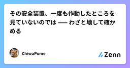
その安全装置、一度も作動したところを見ていないのでは —— わざと壊して確かめる
Zennの「Test」のフィード
今日、自分のコードで緊急停止の2層目が丸ごと機能していないのを見つけた。呼び出す側は書いてあった。呼ばれる側のメソッドが存在しなかった。しかもドキュメントには「実地確認済み」と書いてあった。嘘ではない。接続を切って試して、期待どおりのエラーが出るのを確かめてある。メソッドが無い場合も、出力が一字一句同じだったというだけだ。この記事は、そういう「作ってあるが働いていない安全装置」を、わざと壊して確かめる話を、動くコードで書く。前回（「落ちない」は安全ではない）が「黙って間違う経路を塞ぐ」なら、今回は「塞いだものが本当に働くか」。 まず：なぜ「実地確認済み」が嘘になったの...
13時間前
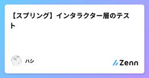
【スプリング】インタラクター層のテスト
Zennの「Test」のフィード
レイヤーごとに関心ごとは異なることを把握しようインタクラター層の最大の関心ごとは「ビジネスロジックの正確性・条件分岐・例外処理」だ。その上で、Springを起動させないピュアなJavaとしてテストが動作させることが絶対的な鉄則になる→さもなければ、数千ファイルであっても数秒で終わるという本来のインタラクターテストのメリットが逆にCI/CDのボトルネックになってしまうからだサンプルコードを見てみよう。外部APIなどのI/Oを伴う依存関係は全てモックして使う// Spring Bootのアノテーション(@SpringBootTestなど)は絶対に使わない🤯@ExtendWi...
13時間前
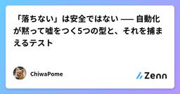
「落ちない」は安全ではない —— 自動化が黙って嘘をつく5つの型と、それを捕まえるテスト
Zennの「Test」のフィード
自作の測定スクリプトに嘘をつかれた。エラーは出ていない。落ちてもいない。正しい形をした、間違った答えを返しただけだった。この記事は、そういう「黙って通る」壊れ方を5つの型に分けて、直し方と、それを捕まえるテストをセットで置いていく。直し方はどれも数行で済む。難しいのは直すことではなく、在ることに気づくほうなので、テストの書き方に重心を置く。 発端：語をひとつ替えたら、答えが100倍変わったYouTubeの検索需要を測るスクリプトを書いた。検索語を渡すと上位の再生数の中央値を返す。主観で発信ネタを選ばないための道具だ。最初に「Claude Code 失敗」で引いたら、上位...
13時間前
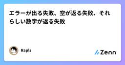
エラーが出る失敗、空が返る失敗、それらしい数字が返る失敗
Zennの「Test」のフィード
4,893記事、反響11,420。集計スクリプトが出した数字です。合っていません。わたしが書いた記事は186本です。出力はこうでした。全4893記事 / 反響合計 11420zenn 4800本 反響11379 中央値 0.0 0本2809 上位1本の占有 7.2%qiita 93本 反響 41 中央値 0.0 0本 62 上位1本の占有 12.2% ストック 32Qiita の93本は合っています。Zenn の4,800本は、Zenn 全体です。dev.to は1行も出ていません。エラーは1つも出ていません。 同じ間違いに、3つの返り方があ...
13時間前
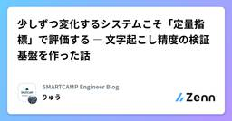
少しずつ変化するシステムこそ「定量指標」で評価する ― 文字起こし精度の検証基盤を作った話
Zennの「Test」のフィード
はじめにこんにちは、りゅうです！今日は私が扱うプロダクトの機能のひとつとして音声（通話）をテキストに変換する「文字起こし」機能があります。この精度を継続的に改善していきたいという話が持ち上がったのですが、その時に改善を行なってもどう良くなったかが評価しずらいと感じていました。「モデルやパラメータをいじったら、精度が上がった 気がする」以上のことが言えない、というのが一番の問題です。いくつかのサンプルを目視で見比べて「なんか良くなったっぽいね」と判断する。この状態のまま改善を積み重ねても、本当に良くなっているのかは客観的にはよく分からないままです。むしろ、ある施策が別のケー...
14時間前
コードが読めないまま、AIの書いたものを検収する — 非エンジニアの検査チェックリスト
Zennの「Test」のフィード
実装をAIに任せると、出てくるものは驚くほどよく動きます。問題は、動いているのに目的が果たされていないときで、そこにはエラーが出ません。私はコードが読めないまま6つのサイトと1つの有料商品を公開して、索引から36ページを消し(データ3,449件ぶんの表示面)、公開直後2日間の記録を永久に失い、誰も来ていないサイトに年18,700円の課金を走らせ、内部ファイル10種を本番URLで半日公開しました。どれもエラーは出ていません。画面も壊れていません。全部「動いて」いました。この本は、コードを一行も読まずにそれを見つける検査の手順書です。検収を5つの問い(動いたか/正しいか/壊れないか/出してよいか/引き継げるか)に割り、各検査に所要時間と、実際に起きた事故の日付と数字を付けました。最終章に、そのままコピーして使える15分版・30分版・60分版のチェックリスト(全18項目)を全文置いています。すべての項目に (a)公開されている一次資料で裏が取れたもの /(b)自分で試して結果が出たもの / (c)試して効かなかったもの のラベルを付け、ラベルの付かないものは書いていません。見ていない数字は「見ていない」と書きました。無料の3章で、実害の実例と、検収という言葉の割り方と、扱わないことの宣言まで読めます。
1日前
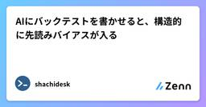
AIにバックテストを書かせると、構造的に先読みバイアスが入る
Zennの「Test」のフィード
症状から入るAI に「このルールで過去データを検証するコードを書いて」と頼む。返ってきたコードは動く。エラーも出ない。テストも通る。そして成績が良すぎる。これはバグではない。落ちないし、例外も投げない。ただ、その時点ではまだ知りようがなかった情報が、その時点の判断に混ざっている。先読みバイアス(look-ahead bias)と呼ばれる。厄介なのは、症状の出方が「壊れる」ではなく「良くなる」ことだ。例外を出さない。数字が上振れするだけ「動くか」を見るテストは全部通るそして良い数字は、悪い数字より疑われにくいこの記事は株価データの検証を題材にするが、混入する経路そのも...
1日前
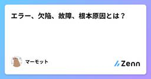
エラー、欠陥、故障、根本原因とは？
Zennの「Test」のフィード
はじめに今回は、誤用しやすいエラー、欠陥、故障の違いや関係性と、根本原因に関して、私自身も誤用しやすいため、JSTQBに準拠した備忘録としてまとめてみました。正しい意味で用語を理解し、使うことは、コミュニケーションの疎通をスムーズに進める上でとても大切です。 エラーとはJSTQBシラバスでは、下記のように記載されています。人間はエラー（誤り）を起こす。そのエラーが、欠陥（フォールト、バグ）を生み出し、その欠陥は、故障につながることもある。人間は、時間的なプレッシャー、作業成果物、プロセス、インフラ、相互作用の複雑度、あるいは単に疲れていたり、十分なトレーニングを受けてい...
1日前
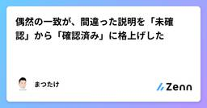
偶然の一致が、間違った説明を「未確認」から「確認済み」に格上げした
Zennの「Test」のフィード
!2作目のポートフォリオとして「Hubpin」（分散した発信を1か所に集めるハブサイト）を作りながら書いています。リポジトリ: https://github.com/Matsutake29/hubpinNext.js（App Router） + Supabase + Tailwind CSS 間違った説明を、自分でテストして「確認済み」にした話ですフォームのバリデーションを Zod で書いていたときのことです。.refine() の挙動について、AI からこう説明されました。フィールドの検証が落ちると .refine() は走らないこれは間違いでした。実際に...
1日前
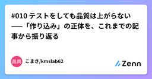
#010 テストをしても品質は上がらない——「作り込み」の正体を、これまでの記事から振り返る
Zennの「Test」のフィード
こんにちは、こまさ(KMSLAB)です。今回は、テストについて、私がいつも言っていることを書いてみます。 テストは何のためにあるのかみなさんは、ソフトウエアのテストを何のために実施していますか。バグを見つけるため、動作を確認するため、ソフトウエアの品質を上げるため。場合によっては、納品に必要だから、というのもあるかもしれません。現実的には、まさにその通りだと思います。テストを実施して、問題を見つけて、問題処理票を書いて、不具合を直して。そして、増える一方の問題処理票と格闘する日々。振り返ってみると、あまり建設的ではありません。私も昔はテストで問題を発見することに励んでいました...
1日前
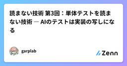
読まない技術 第3回：単体テストを読まない技術 ― AIのテストは実装の写しになる
Zennの「Test」のフィード
この記事は、連載「読まない技術」の第 3 回です。各回はファイルやスクリプトを一つ置けば完結します。連載の全体像と各回の一覧は序論にあります。今回は、AI が書いた単体テストの話です。通っているテストが本当に何かを守っているのかを、テストを読まずに確かめます。まず一つだけ、試してみてください。AI に書かせたテストが通っている実装を開き、実装の 1 行をわざと壊します。境界値を 1 つずらす、条件を反転する、定数を書き換える。それでテストを走らせてください（見終わったら、壊した 1 行は必ず元に戻します）。落ちれば正常です。通ってしまったら、そのテストは最初から何も見ていません...
2日前
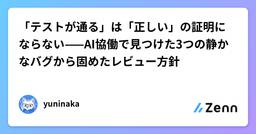
「テストが通る」は「正しい」の証明にならない——AI協働で見つけた3つの静かなバグから固めたレビュー方針
Zennの「Test」のフィード
1. はじめにこれまで2つのシリーズを書いてきた。1つはグラフRAG × ベクトルRAGによる設備保全ナレッジベース構築(全6回)、もう1つはAIエージェントによるレガシーJavaのリバースマイグレーション検証(全4回)。題材はまったく違うが、両方とも「AIエージェントに実装を任せながら、自分は何をどう検証するか」を実地で試した記録になっている。10記事分を振り返ると、テストやCIが通っている状態で、実は中身が間違っていたというケースが何度も出てきた。この記事では、その具体例を3つ挙げ、そこから固まった「実務でAIと協働する上でのレビュー方針」を整理する。 2. 静かに通過し...
2日前
Bubble Tea の TUI をテストしたい？Charm の Tea Tests 入門
Zennの「Test」のフィード
Bubble Tea で TUI を作ったあと、「これ、どうやってテストすればいいんだ？」と手が止まったことはありませんか。普通の Go の関数なら testing パッケージで自然に書けます。CLI の標準出力なら exec して stdout を見るのもわかりやすいです。ところが Bubble Tea のアプリは、tea.Model、Update、View に加えて、キー入力、端末サイズ、ANSI エスケープシーケンスまで絡みます。見た目と状態を一緒に確認したいとなると、少し悩ましいところです。そこで使えるのが、Charm が実験的に公開している Tea Tests です。公式ブ...
3日前
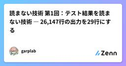
読まない技術 第1回：テスト結果を読まない技術 ― 26,147行の出力を29行にする
Zennの「Test」のフィード
この記事は、連載「読まない技術」の第 1 回です。各回はファイルやスクリプトを一つ置けば完結します。連載の全体像と各回の一覧は序論にあります。今回は、テストの出力の話です。AI がテストを走らせるたびに、数万行の出力がそのコンテキストに流れ込みます。そのうち AI に要るのはどの行かを扱います。まず一つだけ、確かめてみてください。AI コーディングエージェントとの直近のセッションで、テストを実行した箇所の出力を探します。何行ありますか。その出力を最後まで読んだ人はいますか。読んだ人は、たぶんいません。ただし AI は別です。AI はツール出力を読み飛ばせません。届いた行は全部コ...
3日前
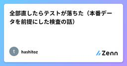
全部直したらテストが落ちた（本番データを前提にした検査の話）
Zennの「Test」のフィード
背景昨日、自分のサイトのバグを1つ直しました。そのとき回帰テストも書きました。今朝それが落ちました。バグが再発したからではありません。直しきったから落ちました…。順を追って書きます。 何を作っているかCVE（Common Vulnerabilities and Exposures）というのは、ソフトウェアの脆弱性ひとつひとつに付く世界共通の識別子です。CVE-2026-73570 のような形をしている。私はその情報をまとめて出す小さなサイトを個人で運用しています。https://cve.autoarticles.net271件ぶんのデータを data/vul...
3日前
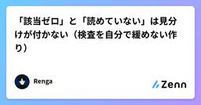
「該当ゼロ」と「読めていない」は見分けが付かない（検査を自分で緩めない作り）
Zennの「Test」のフィード
設問671本を直すのに、先に検査を書きました。感覚で直し始めないためです。その過程で、自分が作った検査の欠陥が次々に出てきました。検査は書いた時点では全部正しく見えます。 直す前に検査を書く順序を逆にすると失敗します。対象を直してから検査を書くと、書いた結果に合わせて検査が緩みます。 自分の直し方が基準になってしまうからです。対象を1つも触らずに、基準だけコードで固定してから始めました。 在庫（allowlist）を免罪符にしない既存の該当分は在庫ファイルへ退避します。ただし2つの向きを両方エラーにします。向き意味在庫に無い新しい該当基準が緩んだ合...
3日前
メモ追記ツールは常に行の最後のセルに書いていた。表の一つでは最後のセルはメモ欄ではなく、77件が間違った列に入っていた
Zennの「Test」のフィード
配信作業の記録はマークダウンの表で管理していて、行に一文を追記するだけの小さなツールがある。行を一意に指すキーと文を渡す。キーが0行か2行に一致すれば拒否する。禁止した文字が含まれていても拒否する。一か月間、慎重に働いてきた。今朝、別のツールが「その行は存在しない」と言った。行は明らかに存在していた。 読み手が探していたもの二つ目のツールが答える問いは単純だ。未公開の原稿のうち、公開日が決まっているものはどれか。日付の表を一行ずつ歩き、三列目、つまりメモ欄にファイル名を探す。妥当だ。ファイル名はそこにあるべきものだ。私は新しい原稿の日付を追加したばかりで、文の中にファイル名も書...
3日前
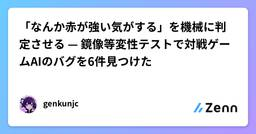
「なんか赤が強い気がする」を機械に判定させる — 鏡像等変性テストで対戦ゲームAIのバグを6件見つけた
Zennの「Test」のフィード
対戦ゲームのAIを書いていると、こういう症状に必ず遭遇します。なんか赤チームの方が強い気がする左右対称のマップ、両チーム同じAIコード。理屈の上では勝率は五分になるはずなのに、実際に回すと片方が勝ち越す。でも「どこが原因か」は分からない。試合を何十回も眺めて、それらしい constants をいじって、また眺める。この記事は、その「気がする」を機械が PASS/FAIL で判定できる形に落とす方法と、それで実際に見つかった6件のバグの話です。前提として、筆者は Omega Strikers というゲームを3年ほど前に競技として遊んでいました。ラダーは最高で世界6〜7位でしたが...
3日前
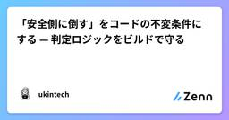
「安全側に倒す」をコードの不変条件にする — 判定ロジックをビルドで守る
Zennの「Test」のフィード
ユーザーの入力を受けて「次にどうすべきか」を出す画面を作りました。間違えると実害が出る種類の判定です。こういうものを作ると、最初はきれいに書けます。壊れるのは半年後で、条件を 1 つ足したときに順序が入れ替わったり、「この手順も出していいよね」と足したものが前提を満たしていないまま出たりします。そこで、安全側の挙動そのものを不変条件として書いて、ビルドで落とすようにしました。テストランナーは入れていません。 何を守りたいか具体的には、こういう性質です。危険な入力は、他の条件を見る前に警告する（他がどう見えても優先する）判断できないときは、安全そうな結論を出さない前提を...
3日前